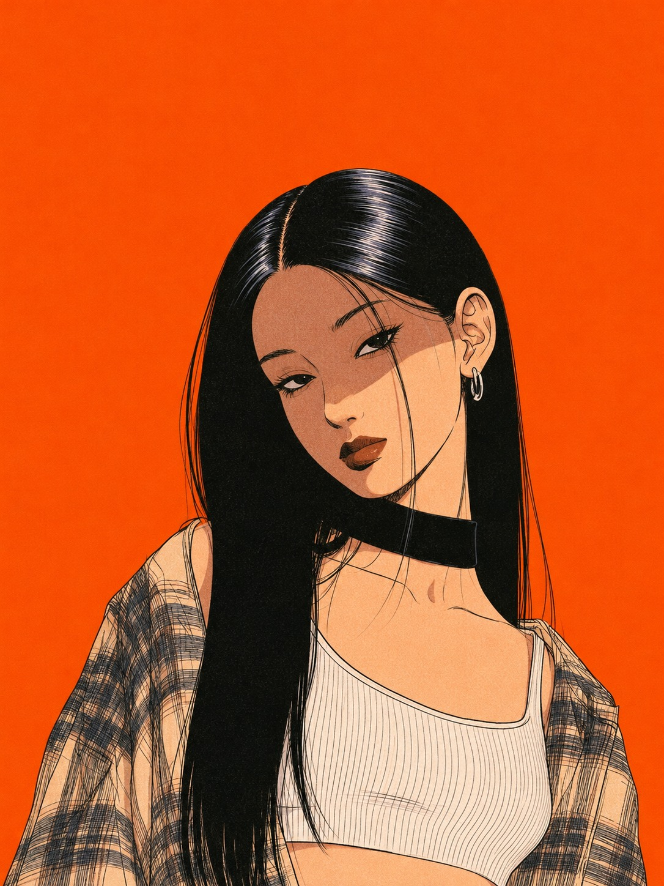
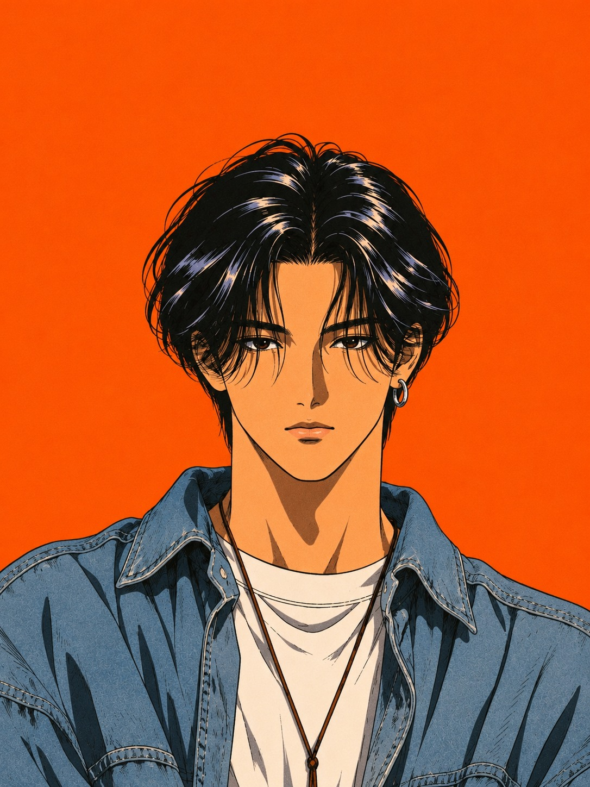
Contents
Into the nineties,서울
이번 출장은 방향이 반대다. 편집부는 1985년에 있고, 지금까지는 늘 과거로 갔다. 이번에는 처음으로 앞으로 갔다. 같은 도시의 1993년부터 1999년까지, 일곱 해를 차례로 들렀다.
1994년의 서울 사람들은 허리춤에 작은 기계를 달고 다닌다. 울리면 공중전화로 달려간다. 몇 해 더 가면 공연장이 풍선으로 찬다. 좋아하는 가수에 따라 풍선 색이 다르다.
옷은 우리가 아는 것과 반대로 간다. 넓던 어깨는 내려오고, 좁던 바지통은 넓어졌다. 허리선은 골반까지 내려갔다. 이 호는 연도순으로 넘기면 된다.
어깨는 내려오고,
바지통은 넓어졌다.
— ÉPOQUE 편집부, 1985년 서울
네 장면 — 무대 뒤 복도에서 밤거리까지
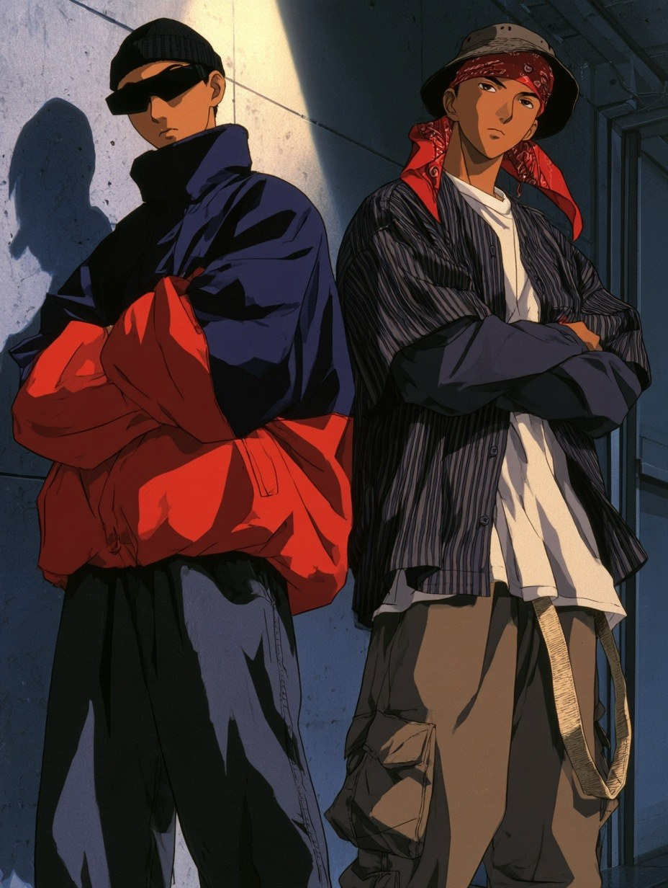
등을 맞댄 두 사람
무대로 나가는 문에서 조명 하나가 새어 나온다. 두 사람은 복도에 등을 맞대고 서서 팔짱을 꼈다. 벽에 그림자가 길게 선다.
한 사람은 검은 선글라스에 비니, 빨강과 남색을 이어 붙인 점퍼. 다른 사람은 붉은 두건 위에 벙거지를 얹고 줄무늬 셔츠를 풀어 입었다. 바지는 둘 다 발등을 덮는다.
- LEFT
- 검은 선글라스, 비니, 배색 나일론 점퍼
- RIGHT
- 두건 위의 벙거지, 풀어 입은 줄무늬 셔츠
- TROUSERS
- 발등을 덮는 통 넓은 바지
- YEAR
- 1993
발이 먼저 나간다
형광등 하나가 켜진 지하 연습실. 마룻바닥에는 은색 카세트 라디오가 놓였다. 그는 한쪽 다리를 차올리고 두 팔을 휘두른다.
노란 후드 티셔츠는 두 치수쯤 크다. 청바지는 통이 넓어서 발을 뻗을 때마다 펄럭인다. 신발은 황갈색 워커, 모자는 뒤로 썼다.
- TOP
- 품이 큰 노란 후드 티셔츠
- JEANS
- 통 넓은 청바지
- BOOTS
- 황갈색 워커
- YEAR
- 1993
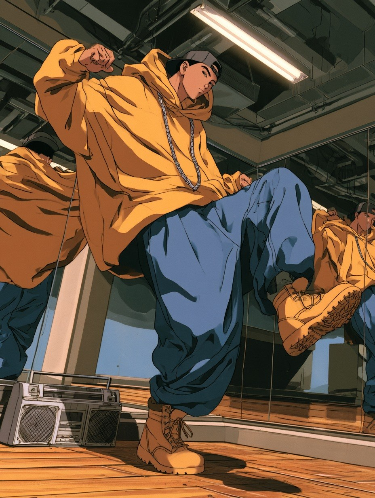
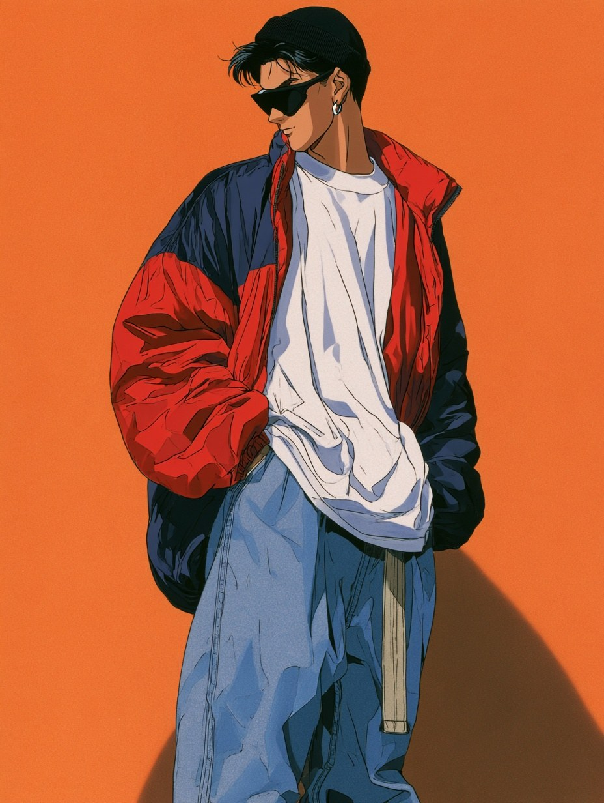
점퍼는 두 치수 크게
1994년의 춤추는 남자들은 옷을 제 치수로 입지 않는다. 점퍼는 어깨선이 팔꿈치까지 내려오고, 바지는 골반에 걸려 있다.
빨강과 남색을 이어 붙인 나일론 점퍼에 흰 티셔츠. 캔버스 벨트는 한참 남겨 아래로 늘어뜨린다. 눈은 검은 선글라스가, 머리는 비니가 가린다.
- JACKET
- 빨강·남색 배색의 오버사이즈 나일론 점퍼
- JEANS
- 골반에 걸친 통 넓은 청바지
- BELT
- 길게 늘어뜨린 캔버스 벨트
- HEAD
- 검은 비니, 검은 선글라스, 은 링 귀걸이
렌즈에 비친 간판
밤거리에서도 선글라스는 벗지 않는다. 렌즈 한 장이 눈썹부터 광대까지 덮고, 그 위로 분홍과 파랑 간판이 지나간다.
패딩 점퍼는 지퍼를 턱까지 올렸다. 드러난 것은 귀와 턱선, 그리고 은 링 귀걸이 하나다.
- SUNGLASSES
- 얼굴을 감싸는 검은 랩어라운드
- HAT
- 눌러쓴 검은 비니
- EARRING
- 은 링 한 짝
- JACKET
- 깃을 세운 남색 패딩 점퍼
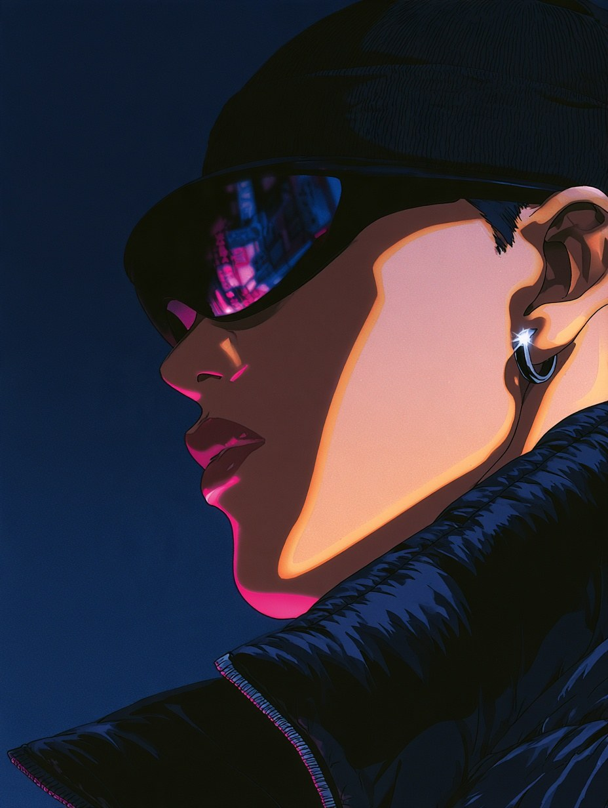
여덟 장면 — 횡단보도에서 주머니 속까지
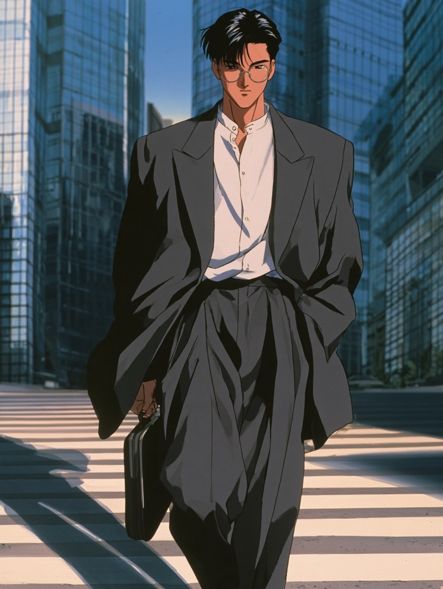
타이 없이 출근하다
아침 햇빛이 유리 빌딩 사이로 낮게 들어와 횡단보도에 긴 그림자를 깐다. 그는 한 손을 주머니에 넣고 건넌다.
재킷은 길고 품이 넉넉하다. 바지는 주름을 잡아 통을 넓혔다. 셔츠는 깃이 없는 차이나 칼라라 타이를 맬 자리가 없다. 단추는 끝까지 채웠다.
- SUIT
- 길고 넉넉한 차콜 수트
- SHIRT
- 목까지 채운 흰 차이나 칼라 셔츠
- GLASSES
- 둥근 금속테
- BAG
- 검은 하드 서류 가방
삐삐가 울리면
허리춤에서 삐삐가 울리면 화면에 숫자가 뜬다. 전화를 걸어 달라는 번호다. 1994년 봄 신문은 삐삐가 중고생 허리춤에까지 달렸다고 썼다.
번호를 확인하면 다음은 공중전화다. 손은 벌써 탁자 위의 전화카드로 간다. 양 갈래로 낮게 묶은 긴 생머리, 목에 꼭 맞는 검은 초커, 짙은 갈색 입술. 골지 톱 위에 체크 셔츠를 걸쳤다.
- HAIR
- 양 갈래로 낮게 묶은 긴 생머리
- CHOKER · LIPS
- 검은 벨벳 초커, 짙은 갈색 립
- TOP
- 골지 톱 위에 걸친 체크 셔츠
- IN HAND
- 삐삐, 전화카드, 은반지
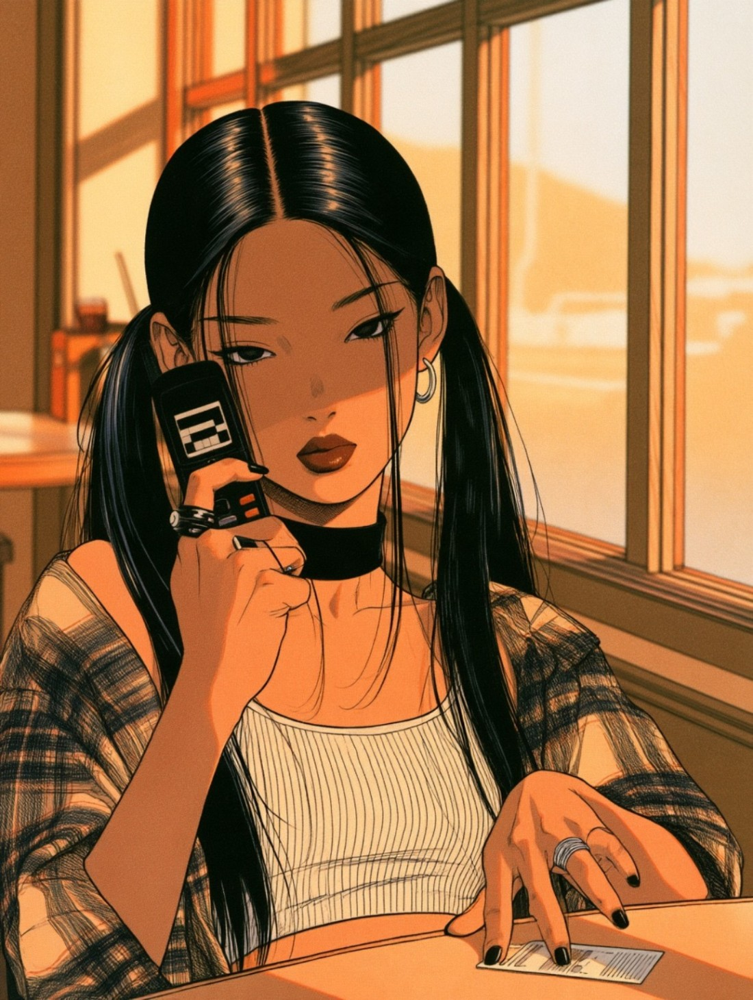
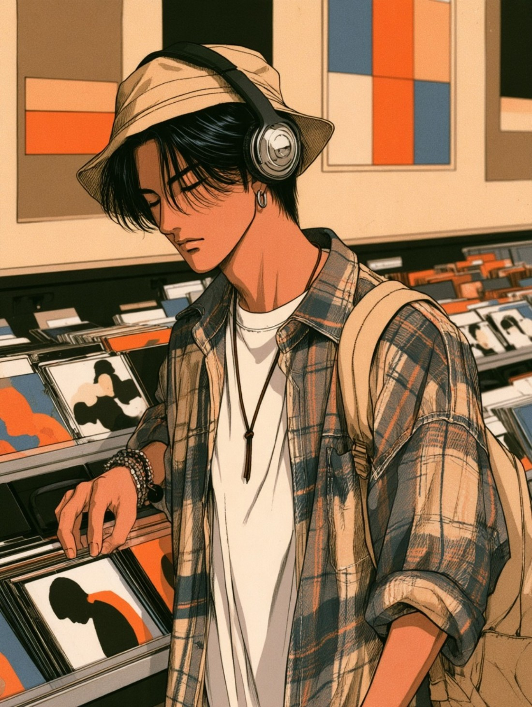
CD 한 장을 고르는 시간
음반 가게의 청음기 앞. 헤드폰을 쓰고 눈을 감으면 고개가 먼저 박자를 탄다. 손은 다음 CD를 넘기고 있다.
벙거지 모자를 눈썹까지 눌러 쓰고, 큼직한 체크 남방을 단추를 풀어 흰 티셔츠 위에 걸쳤다. 목에는 가죽 끈 목걸이, 손목에는 구슬 팔찌, 한쪽 어깨에는 배낭.
- HAT
- 눌러 쓴 카키색 벙거지 모자
- SHIRT
- 단추를 푼 오버사이즈 체크 남방, 흰 티셔츠
- ACCESSORIES
- 가죽 끈 목걸이, 구슬 팔찌, 은 링 귀걸이
- BAG
- 캔버스 배낭
해 질 녘, 한 게임 더
1994년 1월 3일 드라마 「마지막 승부」가 첫 방송을 탔고, 그해 겨울은 농구의 계절이 됐다. 이 장면은 그 겨울이 지난 뒤의 여름이다.
헐렁한 민소매 저지를 흰 티셔츠 위에 겹쳐 입고, 반바지는 무릎까지 내려온다. 이마에는 흰 머리띠, 손목에는 밴드. 발목까지 올라오는 두툼한 농구화가 차림의 중심이다.
- JERSEY
- 흰 티셔츠 위에 겹친 오렌지색 민소매 저지
- SHORTS
- 무릎 길이의 헐렁한 검은 반바지
- HEAD · WRIST
- 흰 머리띠, 손목 밴드
- SHOES
- 흰 양말, 발목까지 올라오는 농구화
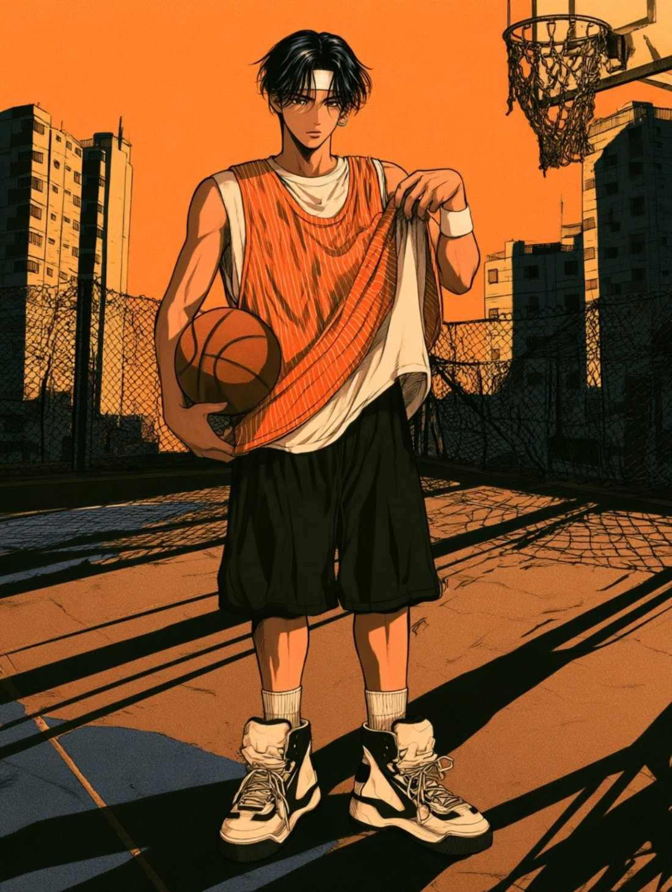
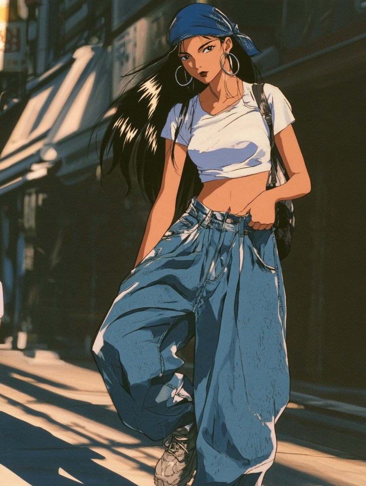
두건과 배꼽티
늦은 오후의 상점가. 차양 그림자가 길게 눕는다. 그녀는 엄지를 벨트 고리에 걸고 이쪽으로 걸어온다.
머리에는 파란 두건, 귀에는 큰 은 고리. 흰 티셔츠는 배꼽 위에서 끝나고, 청바지는 골반에 걸렸다. 바지통은 한쪽에 두 다리가 들어갈 만큼 넓다.
- HEAD
- 파란 두건, 큰 은 고리 귀걸이
- TOP
- 짧은 흰 티셔츠
- JEANS
- 골반에 걸친 통 넓은 청바지
- YEAR
- 1994
벙거지 아래의 눈
지하철역 계단에 그가 앉아 있다. 형광등 빛이 위에서 떨어지고, 벙거지 챙이 눈을 가린다. 무릎에 팔을 얹고 이쪽을 올려다본다.
흰 긴소매 위에 보라와 노랑의 민소매 운동복을 겹쳐 입었다. 반바지 아래로는 흰 양말을 종아리까지 올렸다.
- HAT
- 눌러쓴 검은 벙거지
- TOP
- 긴소매 위에 겹친 민소매 운동복
- SOCKS
- 올려 신은 흰 양말
- YEAR
- 1994
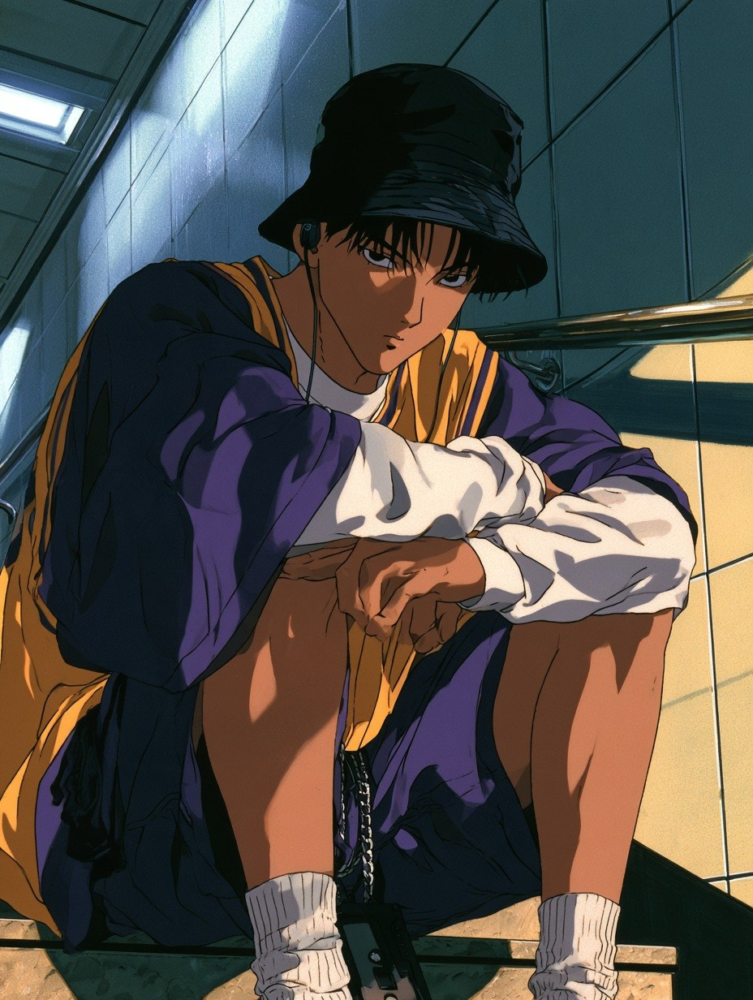
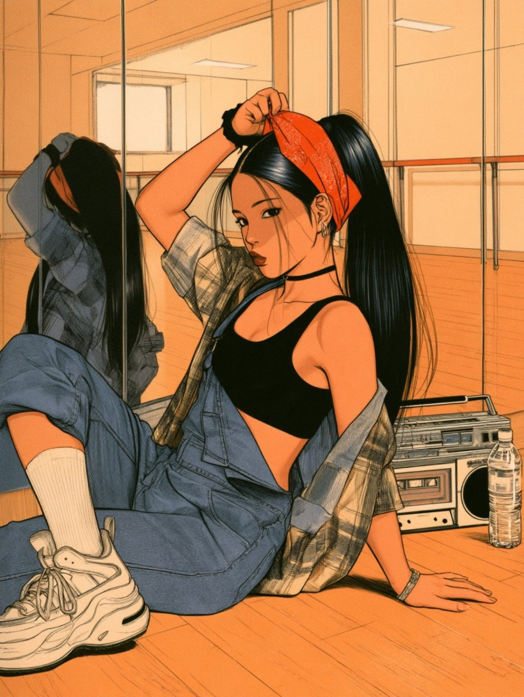
거울 앞에서 한 번 더
거울이 한 벽을 채운 연습실. 카세트 라디오에서 같은 곡이 몇 번째 되감겨 돌아간다.
멜빵바지는 한쪽 끈을 풀어 내려 입는다. 안에는 짧은 검은 톱, 머리에는 두건을 묶었다. 흰 양말을 올려 신고 밑창이 두툼한 운동화를 신었다. 체크 셔츠는 벗어서 팔에 걸쳤다.
- OVERALLS
- 한쪽 끈을 푼 데님 멜빵바지
- TOP
- 검은 스포츠 톱, 팔에 걸친 체크 셔츠
- HAIR
- 높이 묶은 포니테일과 오렌지색 두건, 검은 초커
- SHOES
- 흰 양말, 밑창이 두툼한 흰 운동화
1994년의 주머니
청재킷 위에 주머니와 배낭 속을 꺼내 놓았다. 삐삐, 휴대용 CD 플레이어와 이어폰, 카드, 열쇠고리.
짙은 갈색 립스틱과 타원형의 작은 선글라스, 두건과 곱창 밴드. 얼굴 사진 석 장이 세로로 붙은 사진 띠도 있다.
- SOUND
- 휴대용 CD 플레이어, 이어폰
- SIGNAL
- 삐삐, 카드
- FACE
- 짙은 갈색 립스틱, 타원형 선글라스
- HAIR
- 두건, 검은 곱창 밴드
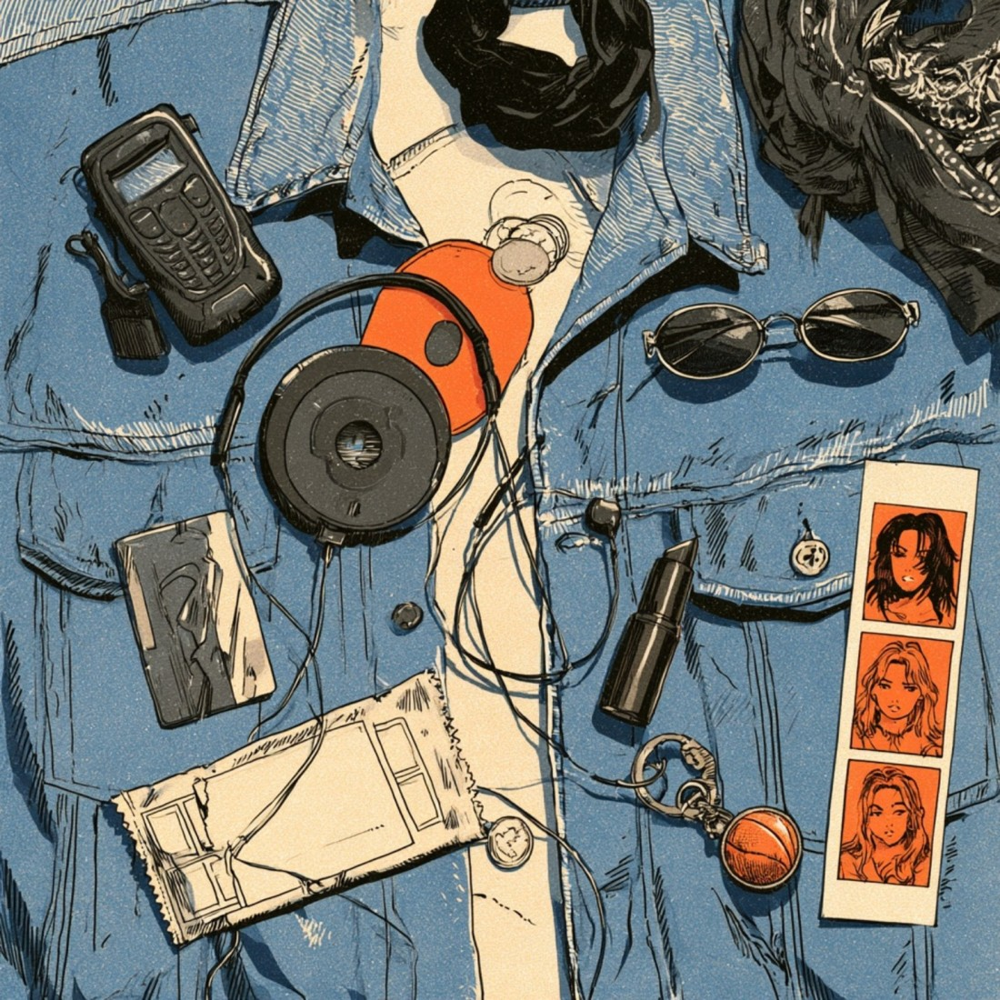
1994
이날 MBC 드라마 「마지막 승부」가 첫 방송을 탔다. 농구 선수들의 이야기를 그린 이 드라마는 2월 22일까지 16부가 방송됐고, 그해 겨울을 농구의 계절로 만들었다.
같은 겨울 농구대잔치에서는 대학 팀인 연세대가 우승했다.
그 무렵
서울에서는
- 1992PC통신 하이텔 서비스 시작
- 1994.1.3드라마 「마지막 승부」 첫 방송
- 1994.3신문에 “삐삐 보편화, 중고생 허리춤에도”
- 1994PC통신 나우누리 서비스 시작
다섯 장면 — 압구정에서 파란 화면 앞까지
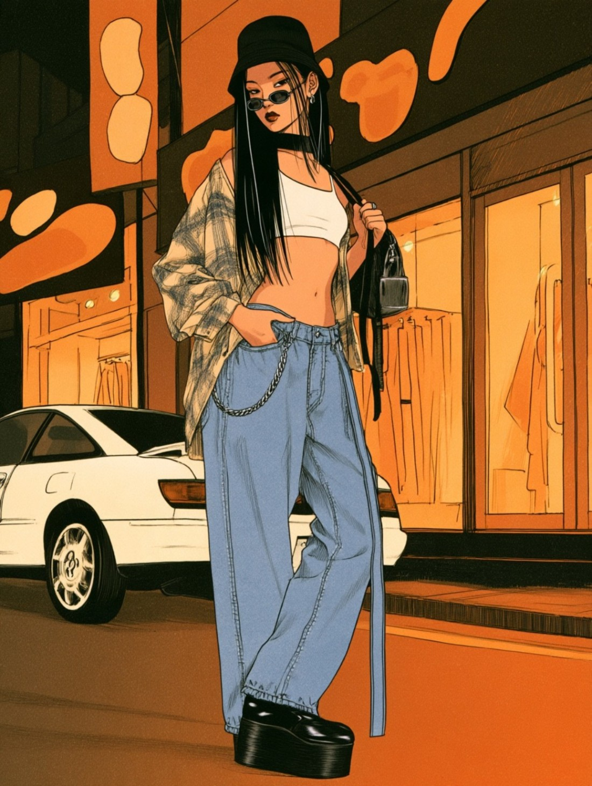
압구정, 여름밤
밤에도 쇼윈도가 환한 압구정의 거리. 길가에는 흰 쿠페가 서 있다.
바지는 통이 넓을수록, 허리는 낮을수록 좋다. 골반에 걸친 연청 바지에 긴 벨트 끝을 늘어뜨리고 은색 체인을 달았다. 위는 배꼽이 드러나는 짧은 흰 톱과 걸친 체크 셔츠. 벙거지 모자와 코끝에 건 작은 선글라스, 통굽 구두.
- JEANS
- 골반에 걸친 통 넓은 연청 바지, 늘어뜨린 벨트, 은색 체인
- TOP
- 짧은 흰 톱, 걸친 체크 셔츠
- HAT · GLASSES
- 검은 벙거지 모자, 타원형 선글라스, 초커
- SHOES · BAG
- 검은 통굽 구두, 작은 배낭
불 켜진 전화 부스
카페 테라스의 의자는 비었고, 쇼윈도의 마네킹만 통 넓은 바지를 입고 서 있다. 모퉁이의 공중전화 부스에는 밤새 불이 켜져 있다.
삐삐를 받은 사람이 달려오는 곳이다. 길바닥에는 누가 두고 간 농구공 하나.
- COLOR
- 오렌지, 호박색, 짙은 남색
- ON THE STREET
- 공중전화 부스, 흰 쿠페, 오토바이, 농구공
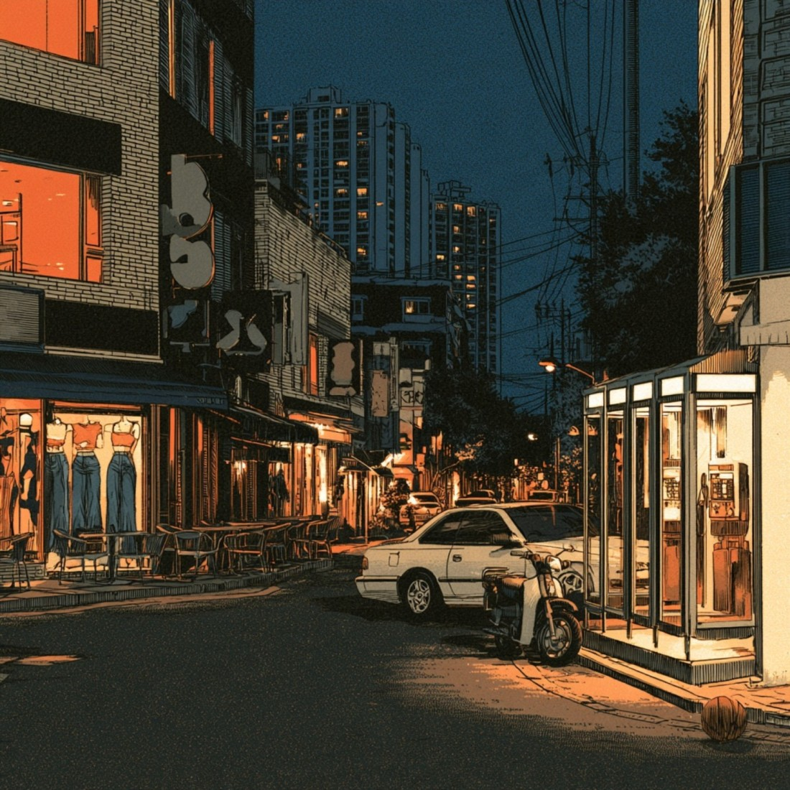
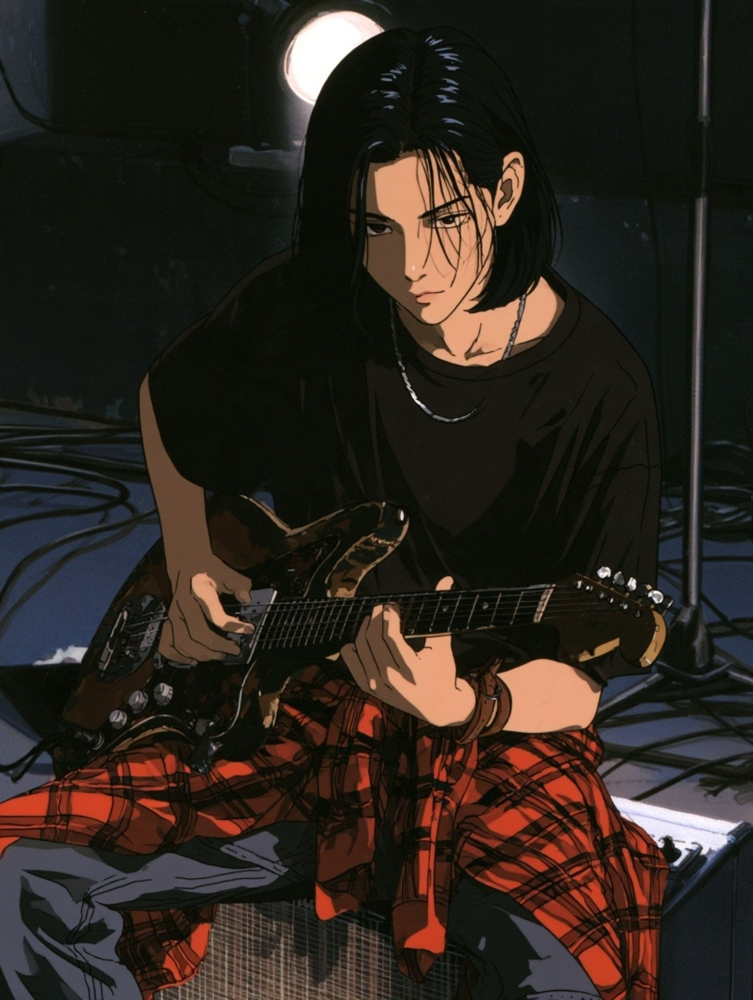
앰프 위에 앉아서
공연 전의 클럽은 조명 하나만 켜 둔다. 그는 앰프 위에 앉아 줄을 맞춘다. 바닥에는 케이블이 엉켜 있다.
머리는 어깨까지 길렀고 가운데서 갈랐다. 검은 티셔츠는 목이 늘어났다. 빨간 체크 남방은 입지 않고 허리에 묶었다.
- TEE
- 물 빠진 검은 티셔츠
- SHIRT
- 허리에 묶은 빨간 체크 남방
- NECKLACE
- 가는 은 체인
- HAIR
- 가운데 가르마의 어깨 길이 생머리
마이크는 하나, 탬버린도 하나
작은 방, 비닐 소파, 두꺼운 노래 책. 한 사람이 눈을 감고 부르면 옆 사람은 탬버린을 든다.
여자는 높이 묶은 머리에 두건, 검은 짧은 톱 위에 한쪽 끈을 푼 멜빵바지. 남자는 흰 티셔츠 위에 큼직한 체크 남방을 풀어 입고 가죽 끈 목걸이를 걸었다.
- HER
- 두건으로 묶은 포니테일, 검은 톱, 데님 멜빵바지, 초커
- HIM
- 오버사이즈 체크 남방, 흰 티셔츠, 가죽 끈 목걸이
- ON THE TABLE
- 노래 책, 음료 캔 두 개
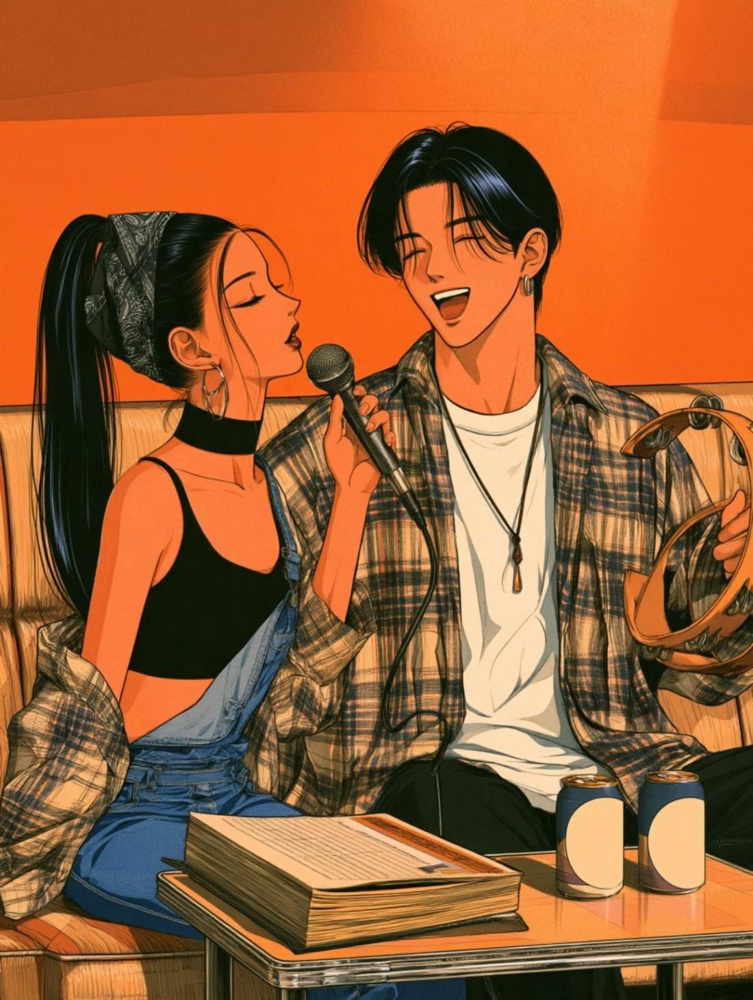
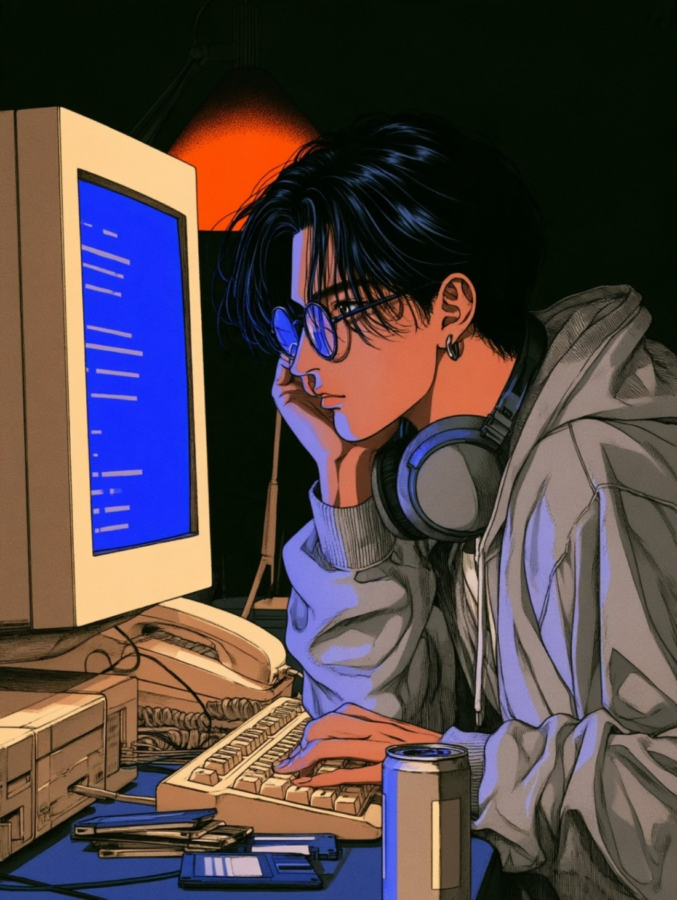
파란 화면 앞의 새벽
전화선에 모뎀을 물리면 방 안의 컴퓨터가 바깥과 이어진다. 하이텔과 천리안에 이어 1994년에는 나우누리가 문을 열었다. 화면에는 글자뿐이었지만, 그 안에 게시판과 동호회와 대화방이 있었다.
후드가 달린 헐렁한 회색 스웨트셔츠에 동그란 안경, 목에는 헤드폰. 전화선을 쓰기 때문에 접속한 만큼 전화 요금이 나왔다.
- TOP
- 오버사이즈 회색 후드 스웨트셔츠
- GLASSES
- 동그란 금속테 안경
- AROUND THE NECK
- 큼직한 헤드폰
- ON THE DESK
- 모니터, 키보드, 전화기, 플로피 디스크
세 장면 — 지하 광장에서 놀이공원까지
한 손으로 선다
지하 광장 바닥에 골판지 한 장을 깔았다. 그는 그 위에서 한 손으로 몸을 받치고 두 다리를 공중에 띄운다. 둘레에 구경꾼들의 다리가 둥글게 서 있다.
주황색 트레이닝 재킷, 통 넓은 회색 바지, 끈이 굵은 흰 운동화. 탈색한 머리에는 털모자를 썼다. 옆에는 카세트 라디오가 놓였다.
- JACKET
- 주황색 트레이닝 재킷
- TROUSERS
- 통 넓은 회색 바지
- SHOES
- 끈이 굵은 흰 운동화
- YEAR
- 1995
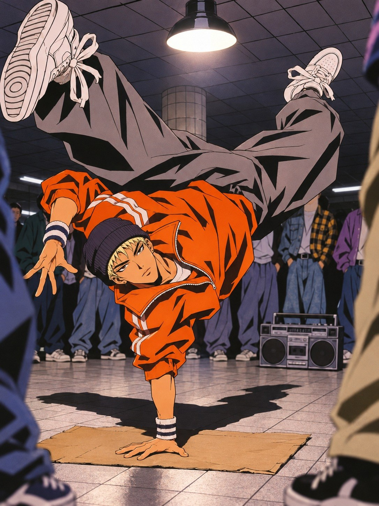
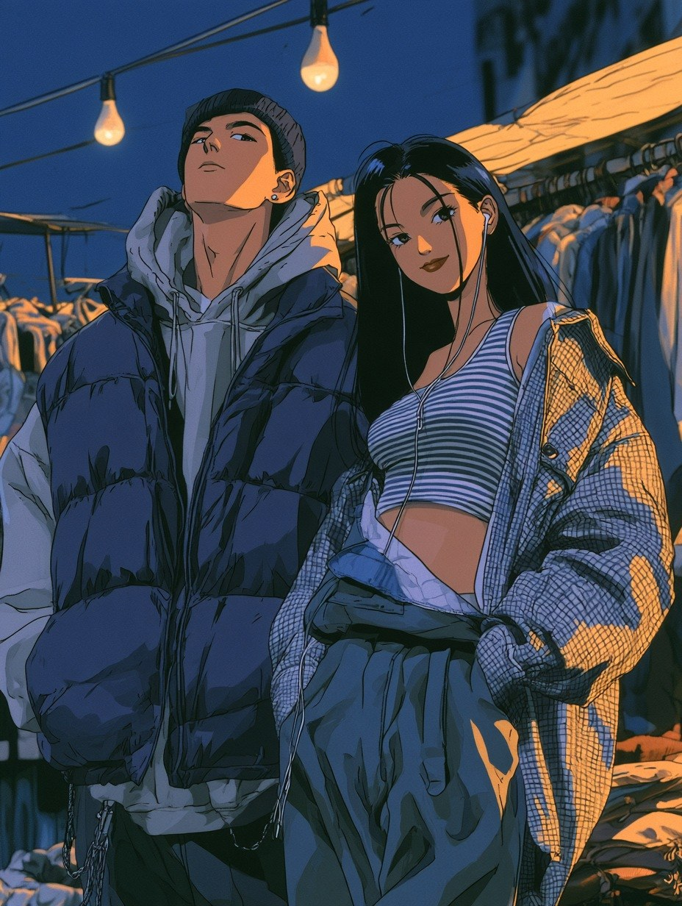
알전구 아래의 두 사람
밤 시장에는 알전구가 줄줄이 달려 있다. 옷걸이마다 옷이 빽빽하다. 둘은 그 앞에 나란히 서서 이쪽을 본다.
그는 비니에 남색 패딩 조끼, 안에는 회색 후드 티셔츠. 그녀는 줄무늬 짧은 윗옷에 큼직한 체크 셔츠를 걸쳤다. 얼굴 한쪽은 전구 빛, 한쪽은 밤이다.
- HIM
- 비니, 남색 패딩 조끼, 회색 후드
- HER
- 줄무늬 짧은 윗옷, 큰 체크 셔츠
- LIGHT
- 줄줄이 단 알전구
- YEAR
- 1995
한 사람에 한 가지 색
겨울 햇빛이 맑은 놀이공원. 뒤로 회전목마와 대관람차가 돈다. 세 사람이 나란히 서서 저마다 자세를 잡았다.
한 사람에 한 가지 색이다. 빨강, 노랑, 하늘색. 통 큰 멜빵바지에 줄무늬 긴소매, 손에는 큼직한 벙어리장갑, 머리에는 귀덮개 달린 털모자. 머리카락은 탈색하거나 물들였다.
- OVERALLS
- 통 큰 멜빵바지
- TOP
- 줄무늬 긴소매 티셔츠
- EXTRAS
- 큼직한 벙어리장갑, 털모자
- YEAR
- 1996
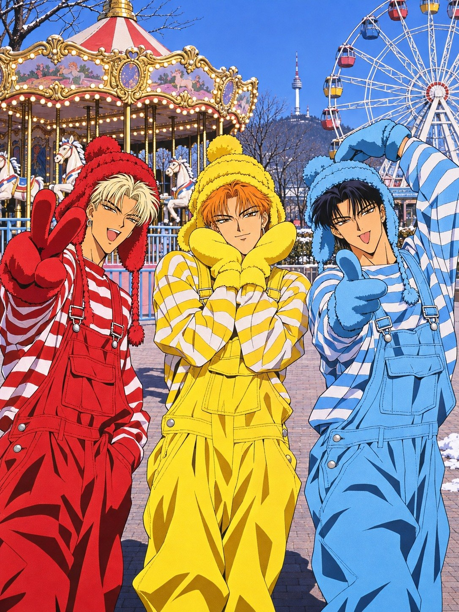
Balloon
Years
1996년 가을부터 서울의 무대에는 여럿이 한 팀을 이룬 십 대 가수들이 차례로 올라왔다. 공연장 객석은 풍선으로 찼고, 팀마다 풍선 색이 달랐다.
- 1996H.O.T. 데뷔다섯 명. 객석에는 흰 풍선.
- 1997젝스키스 데뷔여섯 명. 팬들은 노란 우비를 입었다.
- 1997S.E.S. 결성세 명의 여자 그룹.
- 1998핑클 데뷔네 명의 여자 그룹.
이 호의 그림 속 인물은 모두 가상의 모델이며, 위 그룹의 실제 인물을 그린 것이 아니다.
여섯 장면 — 학교 옥상에서 오락실까지
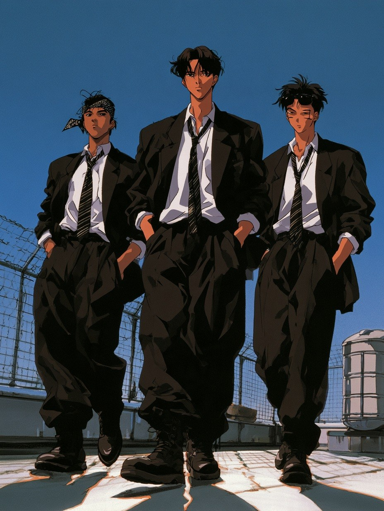
교복을 고쳐 입고
철망이 둘러진 학교 옥상. 해가 낮아 그림자가 길다. 세 사람이 주머니에 손을 넣고 나란히 걸어온다.
교복을 본뜬 검정과 흰색이다. 재킷은 품이 크고, 타이는 느슨하고, 셔츠는 바지 밖으로 나왔다. 바지통은 넓고 신발은 워커. 한 사람은 이마에 두건을 둘렀다.
- JACKET
- 품이 큰 검은 재킷
- TIE
- 느슨하게 맨 줄무늬 타이
- TROUSERS
- 통 넓은 검은 바지, 워커
- YEAR
- 1997
위에서 아래까지 흰색
바닥도 배경도 희다. 세 사람이 카메라 쪽으로 몸을 숙인다. 바닥에 푸른 그림자만 또렷하다.
옷도 모두 희다. 짧은 윗옷에 주머니 많은 통 넓은 바지, 굽 높은 흰 운동화. 머리는 셋이 다르다. 높이 틀어 올린 머리, 긴 생머리, 나비 핀을 꽂은 단발.
- TOP
- 짧은 흰 윗옷
- TROUSERS
- 주머니 많은 통 넓은 흰 바지
- HAIR
- 올림머리, 생머리, 나비 핀 단발
- YEAR
- 1997
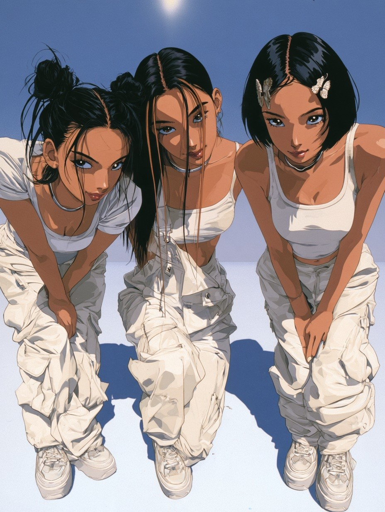
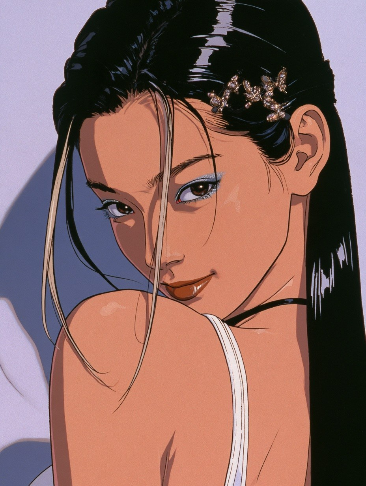
앞머리 두 가닥
머리는 모두 뒤로 넘기고, 앞머리 두 가닥만 얼굴 앞으로 내린다. 그 두 가닥만 밝게 탈색한다.
머리 옆에는 반짝이는 나비 핀을 줄지어 꽂았다. 눈두덩에는 은빛 섀도, 입술은 윤이 나게. 목에는 가는 검은 끈 하나.
- HAIR
- 탈색한 앞머리 두 가닥
- PINS
- 줄지어 꽂은 나비 핀
- EYES
- 은빛 섀도
- YEAR
- 1997
파스텔 네 가지
벚꽃이 핀 공원 벤치. 네 사람이 서로 기대어 앉았다. 꽃 그림자가 얼굴과 옷 위에 떨어진다.
분홍, 하늘색, 연두, 레몬색. 니트 조끼와 카디건 안에 흰 셔츠를 입고 체크 주름치마를 맞췄다. 머리는 길게 펴고 핀이나 머리띠로 넘겼다. 화장은 한 듯 만 듯.
- KNIT
- 파스텔 니트 조끼와 카디건
- SKIRT
- 체크 주름치마
- HAIR
- 긴 생머리, 핀과 머리띠
- YEAR
- 1998
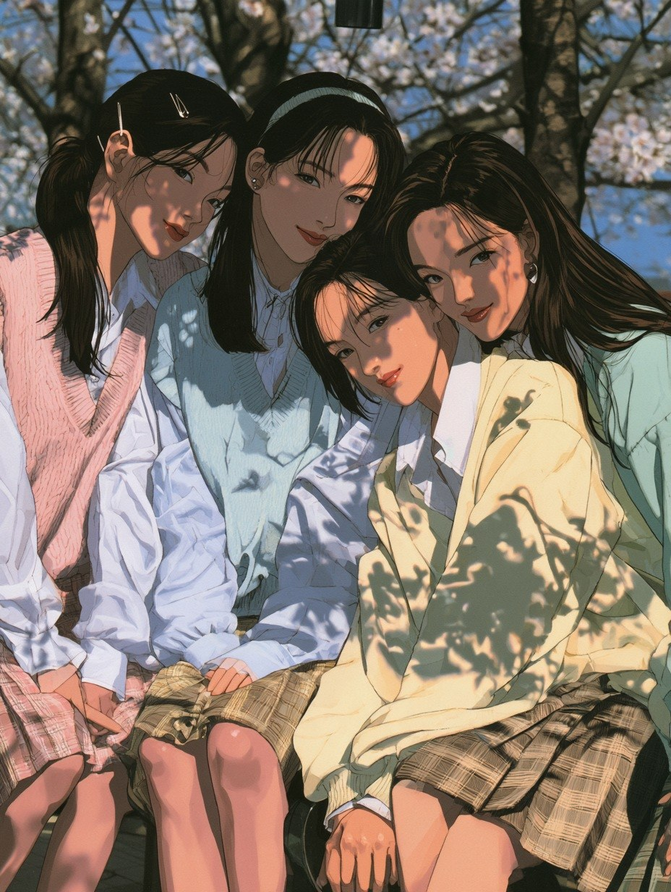
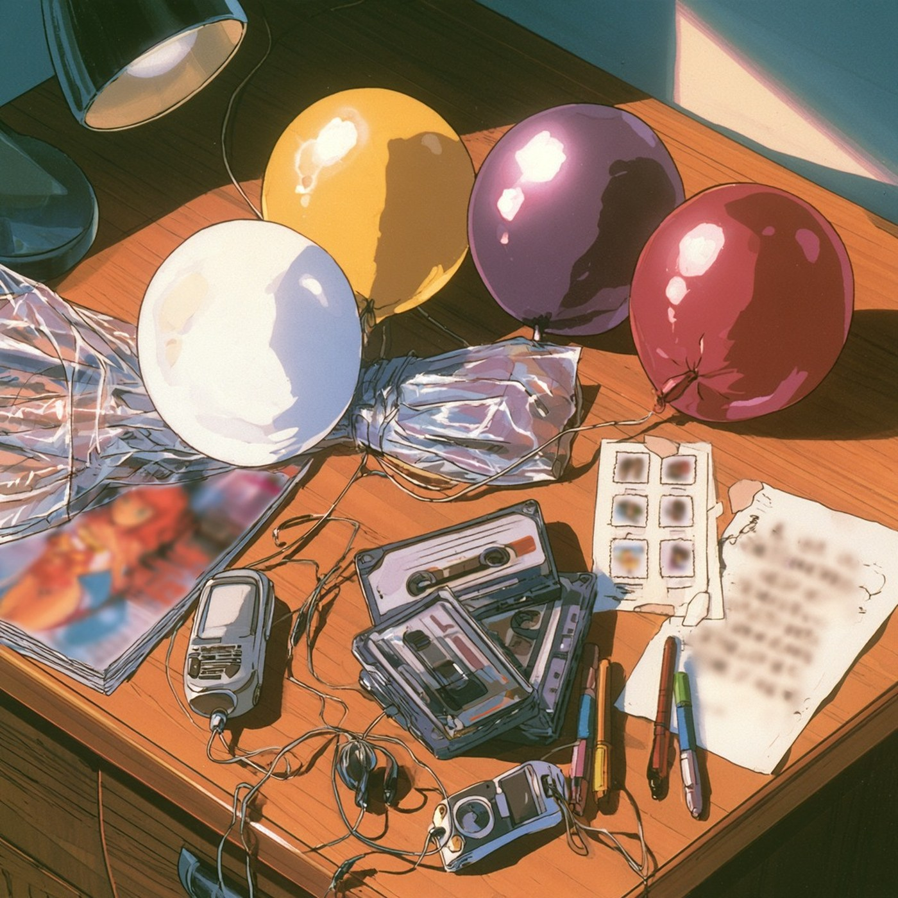
풍선 네 개와 우비 한 벌
책상 위에 풍선 네 개가 있다. 흰색, 노란색, 보라색, 빨간색. 이 무렵 공연장에서는 좋아하는 가수에 따라 풍선 색이 갈렸다.
옆에는 접어 둔 투명 우비, 카세트테이프, 휴대용 카세트, 스티커 사진. 그리고 쓰다 만 편지 한 장.
- BALLOONS
- 흰색, 노란색, 보라색, 빨간색
- RAINCOAT
- 접어 둔 투명 우비
- TAPES
- 카세트테이프, 휴대용 카세트
- LETTER
- 쓰다 만 편지
발판에 불이 들어온다
어두운 오락실에서 바닥만 빛난다. 발판을 밟을 때마다 분홍과 파랑 불이 들어온다. 둘은 나란히 서서 화면의 화살표를 따라 발을 옮긴다.
그는 은색 패딩 점퍼에 노란 선글라스, 머리는 탈색하고 끝만 파랗게 물들였다. 그녀는 은색 민소매에 붉은 단발. 세기가 바뀌기 직전의 옷은 은색이다.
- HIM
- 은색 패딩 점퍼, 노란 선글라스
- HER
- 은색 민소매, 붉은 단발
- HAIR
- 탈색과 염색
- YEAR
- 1999
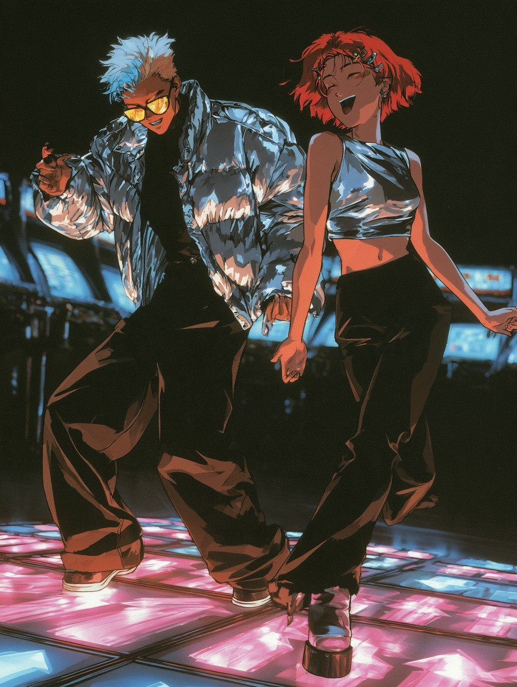
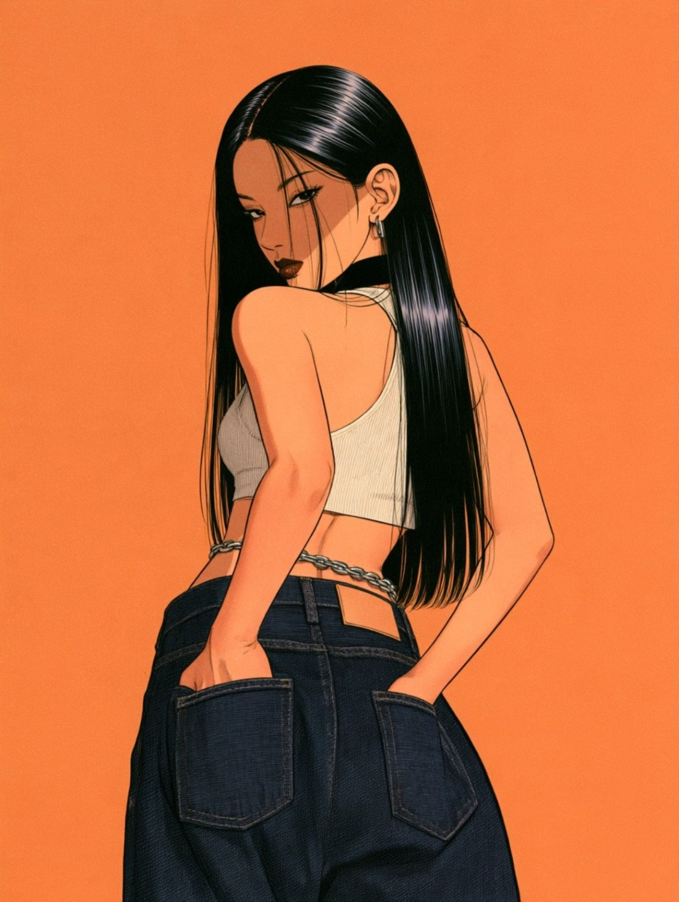
허리는 낮게,
통은 넓게.
The Wardrobe
- Issue
- No.05 · 미래 특파호
1993—1999, printed in Seoul 1985 - Locations
- 빌딩가 횡단보도 · 커피숍 · 음반 가게 · 아파트 단지 농구 코트 · 댄스 연습실 · 압구정 · 지하 라이브 클럽 · 노래방
- Layout
- 두 쪽을 펼친 잡지 지면. 연도순으로 넘기는 일곱 해. 오렌지 한 색과 좁고 굵은 대문자 제목
- Advertisement
- 광고 지면의 WIDE 94는 실재하지 않는 가상의 상품
- Produced by
- Concept, Styling & Art Direction — KIM SOY
Illustrations — AI 생성 이미지
ÉPOQUE의 시간 여행은 다음 호에 계속됩니다.